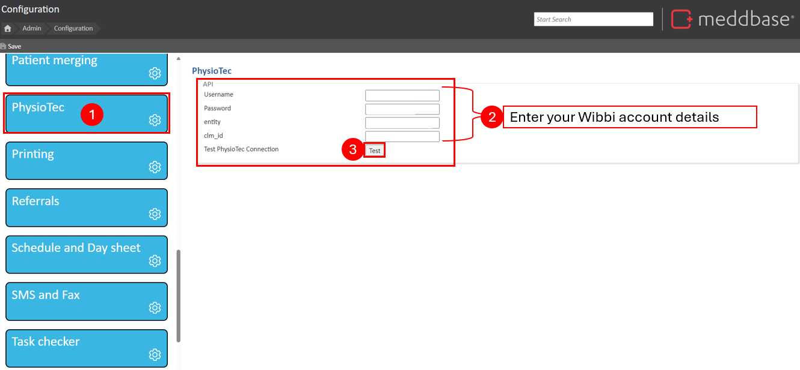
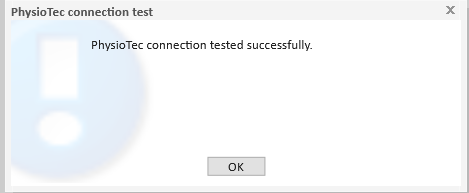
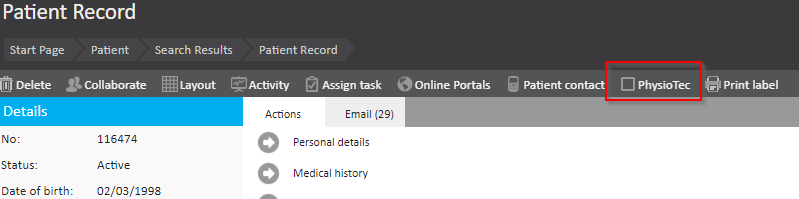
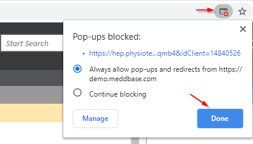
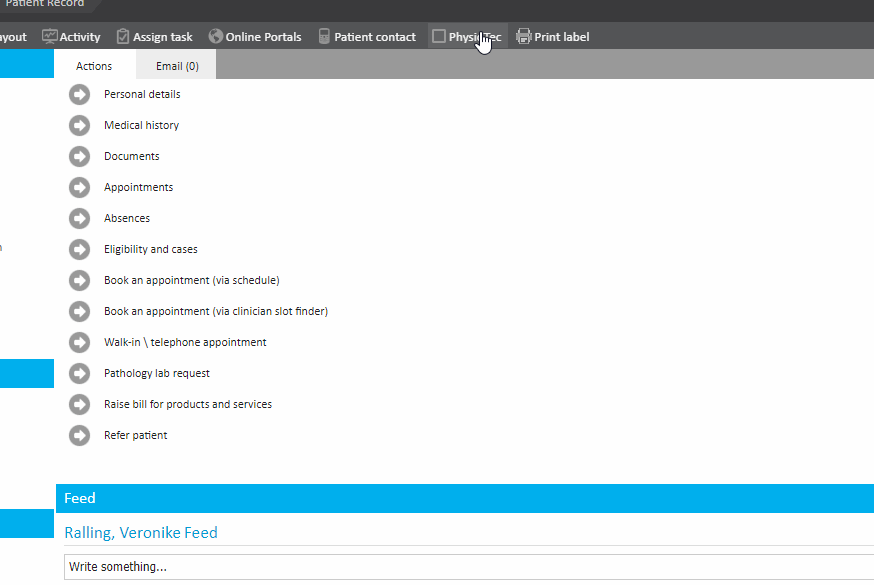
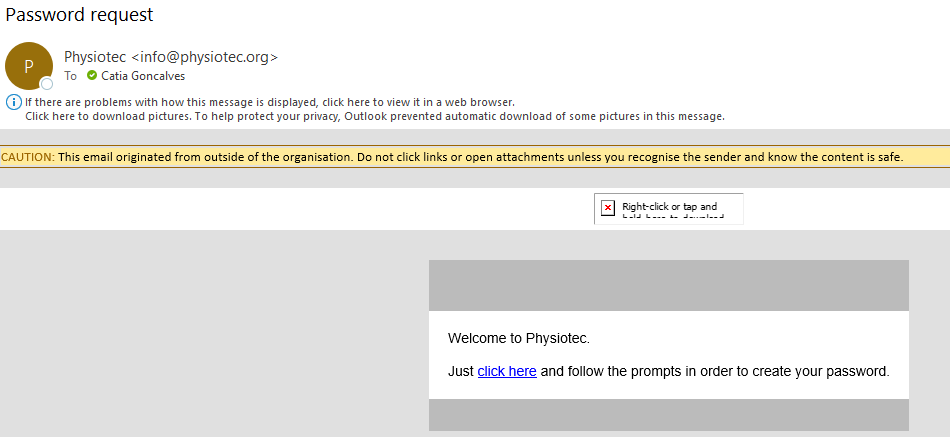

Wibbi (previously known as PhysioTec) is a home exercise prescription software designed to streamline patient care by providing customised exercise programs. By integrating Wibbi with Meddbase, practices can seamlessly access Wibbi directly from patient records in Meddbase. This article outlines the key processes and features that become available when the Wibbi integration is enabled in Meddbase.
PhysioTec has recently rebranded to Wibbi. However, you may still encounter references to PhysioTec in the setup and support materials of Meddbase.
This article provides a step-by-step guide on setting up the Wibbi integration within Meddbase and utilising its features. It covers enabling the integration, entering your credentials, and how to access Wibbi through Meddbase for efficient patient management.
This article is broken down into the following sections:
Once Wibbi has been enabled in your chamber, you will need to provide your Wibbi Credentials. To do this, you will need to go to Admin > Configuration > PhysioTech.
You’ll need to request client credentials directly from Wibbi by emailing support@wibbi.com


After enabling Wibbi, navigate to Start Page > Patient > Find and Select a patient. A new button will appear within the patient’s profile, allowing you to open Wibbi directly.

Click the Wibbi button to be redirected to the Wibbi platform. Ensure pop-up blockers are disabled to allow the page to open.

Once in Wibbi, patient details (such as name, surname, and email) from Meddbase will automatically populate in Wibbi. This is to create your patient in PhysioTec or for you to create the program and send to the patient. By default, a username and password are randomly created which you can share with the patient and ask them to change.

If the Meddbase user who clicks the Wibbi button in the patient's record doesn't exist in Wibbi, they are automatically created as a user Wibbi if they have an email associated with their Meddbase profile.
Wibbi will send an automatic email to the user with a link to create a password.
